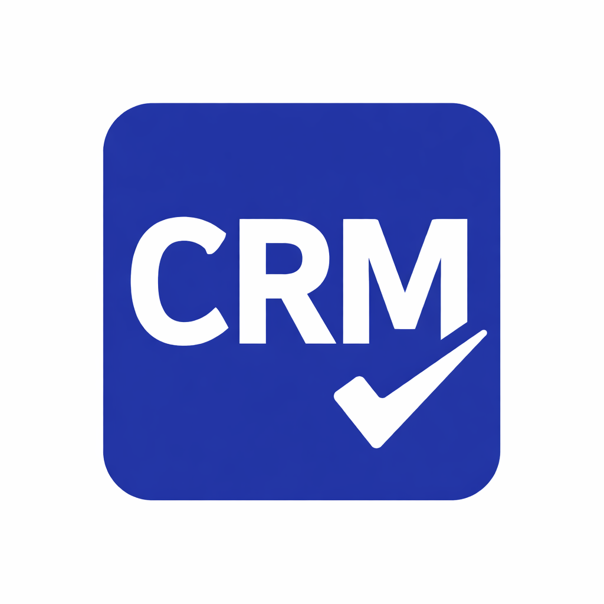

What Is CRM? – Salesforce
This resource explains how CRM systems help organizations manage customer interactions, track data across the customer lifecycle, and build stronger long-term relationships.

Exploring how technology and strategy shape modern customer experiences.
The Customer Journey Design Workshop is a hands-on learning experience focused on how customer interactions are intentionally structured to improve retention, revenue, and long-term growth.
Many students, entrepreneurs, and early professionals do not fully understand what CRM is, how it is used in the real business world, or how customer relationships connect to growth, marketing, sales, and long-term success.
This website presents a 3-day CRM event designed to guide students, entrepreneurs, and early professionals through the basics of CRM, customer journey mapping, and real-world business strategy. It also connects attendees to helpful resources from major companies and industry tools so they can keep learning after the event.
Introduction to CRM systems and customer journey fundamentals.
Understanding customer touchpoints and experience flow.
Hands-on teamwork to design better customer experiences.
This image shows how customer interactions move through connected stages.
This image represents collaboration and strategy building.

Explore resources that connect customer journey strategy with the technology and systems used to build modern digital experiences.
This resource explains how CRM systems help organizations manage customer interactions, track data across the customer lifecycle, and build stronger long-term relationships.
This guide shows how design systems help teams build consistent digital products, making it useful for understanding how customer experiences are implemented in practice.
Learn how to create effective customer journey maps to improve user experience and business strategy.
This article shows how teams can build customer journey maps to better understand user behavior and improve decision-making.
⭐ 3 people have RSVP'd to this event!
We would be delighted to have you join us for the Customer Journey Design Workshop. This event is a chance to explore how organizations design meaningful customer experiences, strengthen relationships, and use CRM systems to support long-term growth. Whether you are interested in business strategy, technology, design, or teamwork, your participation will add value to the conversation. Complete the RSVP form below to reserve your place and become part of an engaging learning experience with others who are excited about innovation and customer-centered thinking.
🎟️ DJ from Texas has RSVP'd.
🎟️ Amy from New York has RSVP'd.
🎟️ Teresa from Montana has RSVP'd.